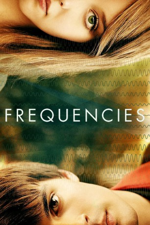

#1286 Frequencies
 
 IMDB-Wertung: 6.8 / 10
IMDB-Wertung: 6.8 / 10  Metascore: 0
Metascore: 0 
Marie (Eleanor Wyld) und Zak (Daniel Fraser) leben in einer Welt, in der das Schicksal des Einzelnen durch die individuelle Frequenz bestimmt wird. Während Maries Frequenz überdurchschnittlich hoch ist, womit sie geradezu als Wunderkind gilt und ihr Erfolg im Leben sowie in der Liebe sicher sind, ist Zaks Frequenz extrem niedrig. Obwohl es ihm verboten ist, eine romantische Beziehung mit einer Person einzugehen, deren Frequenz im hohen Gegensatz zu seiner eigenen steht, verliebt sich der Teenager ausgerechnet in die gefühlskalte Marie. Nun muss er jedoch einen Weg finden, die Naturgesetze zu umgehen, damit er mit dem Mädchen seiner Träume zusammen sein kann. Keine leichte Aufgabe, zumal eine derartige Verbindung gefährliche Einflüsse auf die Umwelt nehmen soll…
Jahr: 2013
Dauer: 105 Minuten
FSK: 12
Land: Australien Studio: Ascot Elite Home EntertainmentTonspuren: DTS - ,
Untertitel:
Auflösung: 1080p (1920x1080) Größe: 6922 MB
Genre: Mystery, Liebe, Sci-Fi
Regisseur: Darren Paul Fisher
Drehbuch: Darren Paul Fisher
Soundtrack: Blair Mowat
Darsteller:
- Daniel Fraser als Zak
- Eleanor Wyld als Marie
- Lily Laight als Child Marie
- David Broughton-Davies als Strauss
- Freddie Rose als Child Thomas Edison
- Elizabeth Webster als Mrs. Cook
- Joanna Hole als Headmistress
- Jim Conway als Agent #3
- Owen Pugh als Theo
- Dylan Llewellyn als Teen Zak
- Georgina Minter-Brown als Teen Marie
- Tom England als Teen Theo
- Charlie Rixon als Child Zak
- Ethan Turton als Child Theo
- Emma Powell als Miss. Anderson
- David Barnaby als Mr. Fortune
- Doris Zajer als Mrs. Fortune
- Timothy Block als Bridges
- Ria Carroll als Nicola Tesla
- Kayti Moran als Teen Nicola Tesla
- Jasmine San als Child Nicola Tesla
- Gareth Llewelyn als Thomas Edison
- Drew Blackall als Child Leonardo
- Iain Batchelor als Mr. Thales
- Carolyn Tomkinson als Mrs. Midgeley
- Scarlett Murphy als Pupil #1
- Hannah Murphy als Pupil #2
- Andrew Ashford als Agent #1
- Simon Yadoo als Agent #2
- Lucy Conway als Shop Assistant
- Rory Kilalea als Doctor
- Gordon Peaston als Panel Member #1
- Mario Vernazza als Panel Member #2
- Beth Cohl als Panel Member #3
- Ned Berry als Angry Man
- Lucy Fisher als Patient Woman
- Katja Mackintosh als Smiling Girl
- Francisco De Negri als Reading Man
- Momo Assaad Taha als Male Customer
- Beth Wignall als Female Customer
- Michael Luxton als Agent , uncredited
Datei: X:\2013(A-F)\Frequencies (2013, FSK, 1920x1080).mkv seit 16.06.2015
Festplatte: HD 2012(N-Z)-2013(A-H)
 Es gibt insgesamt 127 Filme in der Gruppe '2013(A-F)'
Es gibt insgesamt 127 Filme in der Gruppe '2013(A-F)'